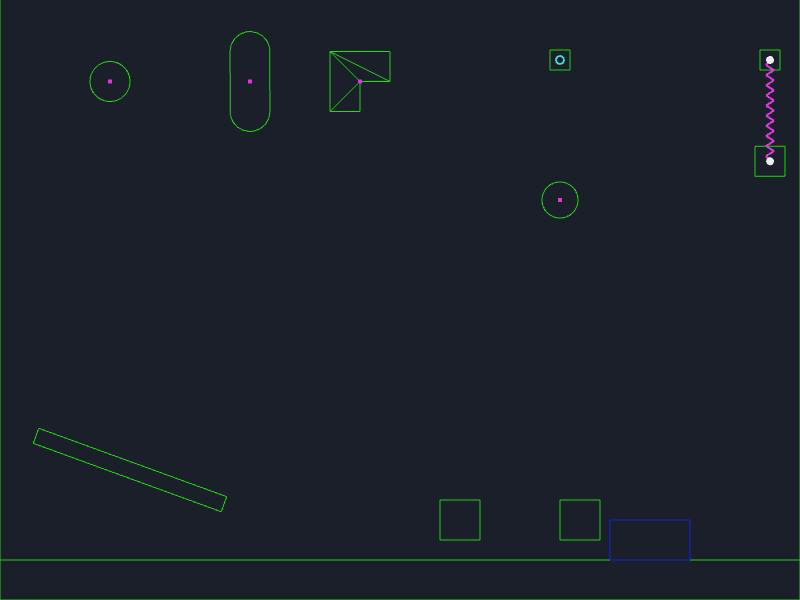

61 · Unity API: Physics 2D
Goal: use Rigidbody2D, the 2D colliders, Physics2D queries and joints with Unity's names and behaviour.

Pick the physics engine#
The 2D engine is a project setting (Project ▸ Project properties ▸ Physics ▸ engine): arcade (fast boxes and circles, no rotation) or matter (rotation, any shape, joints).
In the file nord.project.json:
"physics": { "engine": "matter", "gravity": [0, 900, 0] }| Feature | arcade | matter |
|---|---|---|
| box, circle colliders | yes | yes |
| capsule, polygon (also concave), edge, composite | uses the bounding box (a warning in the Console) | exact |
rotation, AddTorque, angularVelocity |
no | yes |
| joints | position only: hinge/fixed (a pin), spring, distance, target | all nine |
axis constraints, interpolation, Continuous |
yes | yes |
IgnoreCollision, IgnoreLayerCollision |
yes | yes |
Physics2D.Raycast, CircleCast, Overlap*, Distance |
exact on both | exact on both |
The query functions do not use the physics engine, they read the collider data: they give the same answer on arcade and matter, for every shape, in the same frame.
Colliders#
Inspector ▸ + Add component ▸ collider, then choose the shape.
shape |
Fields | Unity class |
|---|---|---|
box |
size [w, h], offset |
BoxCollider2D |
circle |
radius, offset |
CircleCollider2D |
capsule |
size [w, h], direction vertical / horizontal, offset |
CapsuleCollider2D |
polygon |
points (any outline, concave is split into convex pieces) |
PolygonCollider2D |
edge |
points (an open line, edgeRadius thickness) |
EdgeCollider2D |
composite |
merges every collider with usedByComposite: true on this object and its children into one body |
CompositeCollider2D |
| any | trigger (overlaps without blocking) |
isTrigger |
In the file (an entity in scenes/main.scene.json: a wall made of two boxes that act as one solid):
{ "name": "Walls", "components": [ { "type": "rigidbody", "mode": "static" }, { "type": "collider", "shape": "composite" } ],
"children": [
{ "name": "Left", "transform": { "pos": [-60, 0, 0] }, "components": [ { "type": "collider", "shape": "box", "size": [40, 40], "usedByComposite": true } ] },
{ "name": "Right", "transform": { "pos": [ 60, 0, 0] }, "components": [ { "type": "collider", "shape": "box", "size": [40, 40], "usedByComposite": true } ] } ] }The two children have no body of their own: the parent is one solid with a gap between the boxes, and a ray from outside reports Walls once.
From scripts: AddComponent(CapsuleCollider2D), PolygonCollider2D (points, pointCount, SetPath, CreatePrimitive(sides)), EdgeCollider2D (points, edgeRadius), CompositeCollider2D, plus on every collider usedByComposite, bounds (a Bounds), OverlapPoint(p), Distance(other), ClosestPoint(p), IsTouching(other), OverlapCollider(filter, results), Cast(direction, results, distance).
Trap: A polygon drawn clockwise or counter-clockwise both work. Self-crossing outlines do not: split them in two colliders.
Rigidbody2D#
| Unity | Nord |
|---|---|
bodyType Dynamic/Kinematic/Static, mass, drag / linearDamping, angularDrag, gravityScale, simulated |
yes |
velocity, angularVelocity (degrees/second), position, rotation, MovePosition, AddForce(force, ForceMode2D.Force/Impulse), AddTorque, AddForceAtPosition |
yes |
constraints = RigidbodyConstraints2D.FreezePositionX / FreezePositionY / FreezeRotation / FreezePosition / FreezeAll (add with ` |
`) |
interpolation = 'None', 'Interpolate', 'Extrapolate' |
the picture is drawn between the last two 60 Hz physics steps: smooth on 120/144 Hz screens |
collisionDetectionMode = 'Discrete' or 'Continuous' |
fast bodies are checked along their path so they cannot jump through thin walls |
AddExplosionForce(force, position, radius, upwards) |
pushes away, falling off to zero at radius |
sharedMaterial = { friction, bounciness } |
copies the numbers to the body |
GetPointVelocity, Cast, OverlapCollider, IsTouching, IsTouchingLayers |
yes |
File: scripts/Bullet.js (new file, the whole file: a bullet that cannot tunnel)
import { MonoBehaviour, Rigidbody2D, RigidbodyConstraints2D, Vector2 } from 'nord';
export default class Bullet extends MonoBehaviour {
Start() {
const rb = this.GetComponent(Rigidbody2D);
rb.collisionDetectionMode = 'Continuous'; // 3000 px/s against a 4 px wall: still hits
rb.interpolation = 'Interpolate';
rb.gravityScale = 0;
rb.constraints = RigidbodyConstraints2D.FreezeRotation;
rb.velocity = new Vector2(3000, 0);
}
}Trap: Continuous detection is for small fast bodies against thin colliders. It sweeps the body's shape along this step's movement and stops it at the first thing in the way (with
bounceit bounces there). It does not make slow bodies more exact.
Queries#
Every query works in world pixels and returns what Unity returns. Anything with All returns an array sorted by distance; NonAlloc fills the array you give and returns the count.
| Unity | Returns |
|---|---|
Raycast(origin, direction, distance, layerMask) |
one hit: collider (the entity, null for a miss), point, normal, distance, fraction, transform, rigidbody, centroid |
RaycastAll, RaycastNonAlloc(origin, direction, results, distance, mask) |
|
Linecast(start, end, mask), LinecastAll, LinecastNonAlloc |
|
CircleCast(origin, radius, direction, distance, mask) and All / NonAlloc |
a swept circle; centroid = where the circle was at the hit |
BoxCast(origin, size, angle, direction, distance, mask) |
a swept rotated box |
CapsuleCast(origin, size, CapsuleDirection2D.Vertical, angle, direction, distance, mask) |
a swept capsule |
OverlapPoint(p), OverlapCircle(p, r), OverlapBox(p, size, angle), OverlapArea(a, b), OverlapCapsule(p, size, dir, angle) |
the first collider's object or null. With All an array, with NonAlloc the count. |
OverlapCollider(collider, filter, results) |
everything touching a collider |
Distance(colA, colB) |
{ distance (negative = overlapping), isOverlapped, normal, pointA, pointB } |
ClosestPoint(position, collider), IsTouching(a, b), IsTouchingLayers(collider, mask) |
|
IgnoreCollision(a, b, ignore), GetIgnoreCollision, IgnoreLayerCollision(la, lb, ignore), GetIgnoreLayerCollision |
|
queriesHitTriggers, queriesStartInColliders |
true by default |
A ray that starts inside a collider hits it at distance 0 with the normal pointing back along the ray (Unity's queriesStartInColliders). A cast that starts overlapping reports distance 0 as well. ContactFilter2D (SetLayerMask, useTriggers) is accepted by OverlapCollider and by Raycast(origin, dir, filter, results, distance).
File: scripts/Scanner.js (new file, the whole file: step height and wall check for a 2D character)
import { MonoBehaviour, Physics2D, Vector2, CapsuleDirection2D, LayerMask } from 'nord';
export default class Scanner extends MonoBehaviour {
Update() {
const p = this.transform.position, here = new Vector2(p.x, p.y), ground = LayerMask.GetMask(0);
const down = Physics2D.Raycast(here, Vector2.up, 40, ground); // 2D: y grows downward, so "down" is Vector2.up
const wall = Physics2D.CapsuleCast(here, new Vector2(20, 48), CapsuleDirection2D.Vertical, 0, Vector2.right, 6, ground);
this.grounded = !!down.collider;
this.blocked = !!wall.collider;
for (const e of Physics2D.OverlapCircleAll(here, 80)) if (e.CompareTag('enemy')) this.log('enemy near', e.name);
}
}Trap: In 2D the y axis points down.
Vector2.upis(0, 1): it points down the screen, which is why the ground check above uses it. UseVector2.downfor "towards the top".
Joints#
Inspector ▸ + Add component ▸ joint, choose kind, set connectedBody (pick the other entity) and anchor. Or from a script:
File: scripts/Door.js (new file, the whole file: a swinging door on a motor)
import { MonoBehaviour, HingeJoint2D, SpringJoint2D, Rigidbody2D, Vector2 } from 'nord';
export default class Door extends MonoBehaviour {
Start() {
const hinge = this.AddComponent(HingeJoint2D);
hinge.connectedBody = this.entity.parent.GetComponent(Rigidbody2D); // the frame
hinge.anchor = new Vector2(-40, 0); // the edge of the door
hinge.useLimits = true;
hinge.limits = { min: -90, max: 0 }; // degrees
hinge.useMotor = true;
hinge.motor = { motorSpeed: 45, maxMotorTorque: 1000 };
}
}| Unity class | kind |
Properties |
|---|---|---|
HingeJoint2D |
hinge |
useLimits, limits {min,max} (degrees), useMotor, motor {motorSpeed, maxMotorTorque}, jointAngle |
SpringJoint2D |
spring |
distance, autoConfigureDistance, frequency, dampingRatio |
DistanceJoint2D |
distance |
distance, maxDistanceOnly |
FixedJoint2D |
fixed |
frequency, dampingRatio (0 = rigid) |
SliderJoint2D |
slider |
angle, useLimits, limits {min,max}, useMotor, motor, jointTranslation |
WheelJoint2D |
wheel |
suspension {frequency, dampingRatio, angle}, useMotor, motor |
TargetJoint2D |
target |
target (a world point: j.target = mouseWorld), maxForce, frequency, dampingRatio |
RelativeJoint2D |
relative |
linearOffset, angularOffset, maxForce |
FrictionJoint2D |
friction |
maxForce, maxTorque |
All joints: connectedBody (empty = the world), anchor, connectedAnchor, autoConfigureConnectedAnchor, enableCollision, breakForce (then OnJointBreak(info) runs on the scripts and the joint is removed). With autoConfigureConnectedAnchor the second anchor is placed so the joint starts relaxed, exactly as in Unity (including: a spring with it on starts at length 0 unless you turn it off).
Trap: Joints with a long lever (an anchor far from the body's centre) on a light body are hard for the Matter solver. Nord adds the body's moment of inertia about the pivot (parallel-axis theorem) so a hinged board swings like a pendulum instead of exploding; give such bodies a realistic
mass.
Check yourself#
- Open
examples/physics-laband runawait __lab.selfTest()in the browser console: 17 checks (shapes, composite, hinge, spring, IgnoreCollision, constraints, continuous detection, interpolation, queries) pass on matter; add?physics=arcadefor the arcade subset. - Compare a
Physics2D.Raycastagainst the debug drawing (?debug): the green outlines are the colliders the queries use.
Next: Physics 3D and joints. Back to: Input.